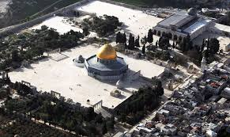

Alaqsa Mosque
Jerusalem

The Al-Aqsa Mosque, located in the Old City of Jerusalem, Palestine, is one of the most
significant and
revered sites in Islam. As the third holiest site in Islam, after Mecca and Medina,
Al-Aqsa holds
profound religious and historical importance.
The mosque, whose name means "the farthest mosque" in Arabic, is situated on the Haram al-Sharif, or the Noble Sanctuary, a large esplanade that also includes the Dome of the Rock. Al-Aqsa has been a site of Muslim worship for over a millennium, and its intricate architecture and serene courtyards reflect the rich cultural heritage of the region. The mosque is not only a place of spiritual significance but also a symbol of the enduring presence of Islamic culture in Jerusalem.
Its history is intertwined with the complex and often tumultuous history of the city itself, making it a focal point of both reverence and contention in the ongoingIsraeli-Palestinian
conflict.
Despite the challenges,
The mosque, whose name means "the farthest mosque" in Arabic, is situated on the Haram al-Sharif, or the Noble Sanctuary, a large esplanade that also includes the Dome of the Rock. Al-Aqsa has been a site of Muslim worship for over a millennium, and its intricate architecture and serene courtyards reflect the rich cultural heritage of the region. The mosque is not only a place of spiritual significance but also a symbol of the enduring presence of Islamic culture in Jerusalem.
Its history is intertwined with the complex and often tumultuous history of the city itself, making it a focal point of both reverence and contention in the ongoing
Al-Aqsa remains a beacon of faith and resilience, drawing worshippers and visitors from around the world.